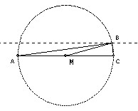

Given the length |AC|, construct a triangle ABC with ∠ABC = 90o, and the median BM satisfying BM2 = AB·BC.
Solution

Area = AB·BC/2 (because ∠ABC = 90o= BM2/2 (required) = AC2/8 (because BM = AM = MC), so B lies a distance AC/4 from AC. Take B as the intersection of a circle diameter AC with a line parallel to AC distance AC/4.

Solutions are also available in: Samuel L Greitzer, International Mathematical Olympiads 1959-1977, MAA 1978, and in István Reiman, International Mathematical Olympiad 1959-1999, ISBN 189-8855-48-X.
1st IMO 1959 home
© John Scholes
jscholes@kalva.demon.co.uk
17 Sep 1998
Last corrected/updated 24 Sep 2003